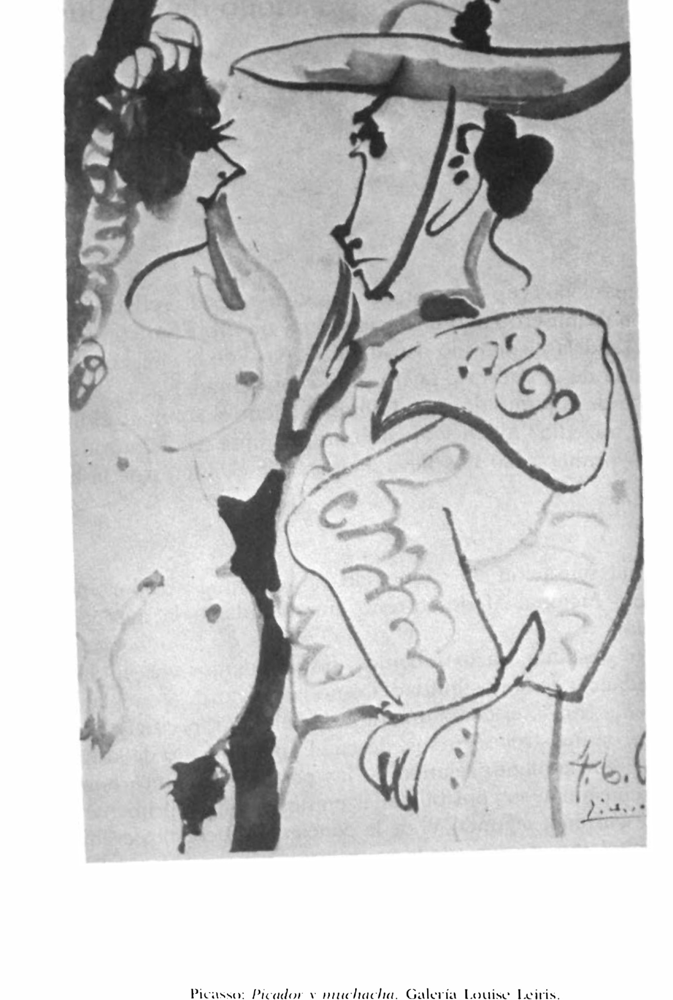

Lágrimas de Eros · Obra 87 de 121
Picador y muchacha
Pablo Picasso

Dibujo a la aguada de un picador con sombrero de ala ancha junto a una muchacha. En 1961 estaba en la Galerie Louise Leiris, la galería que vendía la obra de Picasso. Bataille lo acompaña de una nota sobre la pasión taurina del pintor desde niño y remite a la película de Jean Desvilles «Picasso, romancero du picador».
Lo que hace que destaque
Dibujo a la aguada de un picador con sombrero de ala ancha junto a una muchacha. En 1961 estaba en la Galerie Louise Leiris, la galería que vendía la obra de Picasso. Bataille lo acompaña de una nota sobre la pasión taurina del pintor desde niño y remite a la película de Jean Desvilles «Picasso, romancero du picador».
Contexto histórico
Sin identificar en catálogos. Seguramente es uno de los dibujos taurinos de 1959-1960 (la Galerie Louise Leiris expuso «Picasso. Dessins 1959-1960» en 1960), pero no se ha encontrado la hoja; la fecha escrita en la esquina no se lee en la reproducción. «La galería que vendía la obra de Picasso» no está en las fuentes citadas.
Autoría y procedencia
Pablo Ruiz Picasso (1881-1973), pintor y escultor español, cofundador del cubismo y figura cumbre del arte contemporáneo universal.
En los libros
Las lágrimas de Eros, de Georges Bataille · Lámina de la p. 163
«Desde su primera infancia, en efecto, vivió en el ambiente de las corridas […], y la corrida conservó un lugar central en su vida (como atestiguan sus dibujos).»From his early childhood, indeed, he lived in the atmosphere of bullfights (Cf. Roland Penrose, Picasso, His Life and Work, London, 1958), and the corrida retained a central place in his life (as is witnessed in his drawingsGeorges Bataille, «Las lágrimas de Eros» (1961), traducido al español de la ed. inglesa de City Lights (1989), p. 163
Ficha pendiente de contrastar con fuentes académicas.